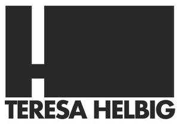

Trade Mark Journal No.2025/014 4 April 2025
UK00004178050 24 March 2025 (3,14,25,35)

- Class 3
- Toiletries; Ethereal oils; Body oils [for cosmetic use]; Cosmetics; Hair lotions; Dentifrices; Nail varnish; Hair dyes; Lipsticks; Cosmetic pencils; Make-up powder; Make-up preparations; Cosmetic kits; Tissues impregnated with cosmetic lotions; Perfumes; Cologne impregnated disposable wipes; Wiping cloth impregnated with a cleaning preparation for cleaning eye glasses; Baby wipes; Cleaning preparations; Soap; Perfumery; Deodorants for personal use [perfumery]; Cleansing gels; Shampoos; Detergents; Hair conditioners; Moist paper hand towels impregnated with a cosmetic lotion; Perfumed tissues; Lotions for cosmetic purposes; Bath salts.
- Class 14
- Precious metals and their alloys; Jewellery; Horological articles; Chronometric instruments; Cuff links and tie clips; Paste jewellery; Precious and semi-precious stones.
- Class 25
- Uniforms; Coats; Gabardines; Bath robes; Espadrilles; Bathing suits; Bermuda shorts; Blouses; Bodies [clothing]; Berets; Knickers; Scarves; Skirts; Socks; Footwear; Trousers; Shirts; Tee-shirts; Blousons; Belts [clothing]; Dresses; Neckties; Waistcoats; Jackets [clothing]; Caps being headwear; Caps being headwear; Gloves [clothing]; Rain slickers; Balaclavas; Jerseys [clothing]; Underwear; Maillots; Mantillas; Stockings; Kerchiefs [clothing]; Neckerchiefs; Pyjamas; Clothing for gymnastics; Underwear; Sandals; Sneakers; Underpants; Headgear; Braces [suspenders] for clothing; Suits; Masquerade costumes; Ready-made clothing; Wedding dresses; Boxer shorts; Ready-made clothing; Sportswear.
- Class 35
- Advertising; Business management; Business administration; Company office secretarial services; Retail, wholesale, mail order and electronic retail services all in connection with the sale of ready-made clothing, bridal wear, Fabrics, Footwear, Hats and clothing accessories, Briefcases and pocket wallets (leatherware), Bags, Beach bags, Handbags and travel bags, school cases and bags, pocket wallets, Articles of jewellery, Watches, Backpacks and school satchels, Briefcases, Travel accessories (leather goods), key cases [leatherware], umbrella covers, Briefcases, Back packs, Coin holders (purses), sunshade parasols, Garment bags for travel, bags for climbers and campers, School bags (satchels), leather cases for firearms and handguns, change purses, trunks and travelling bags umbrellas and Parasols, Walking sticks; Provision of advertising space by electronic means and global information networks; Business representative services; Business advice relating to franchising; Business management advisory services relating to franchising; Advice in the running of establishments as franchises; Business advice and consultancy relating to franchising; Business assistance relating to franchising; Assistance in product commercialization, within the framework of a franchise contract; Business management; Organisation of exhibitions and trade fairs for business and promotional purposes; Information in business matters; Marketing studies; Public relations services; Commercial information agency services; Production of advertising matter and commercials; Commercial intermediation services; Commercial information services; Import and export services; Promoting and conducting trade shows.
TERESA HELBIG ATELIER, S.L.
Representative: The Trade Marks Bureau